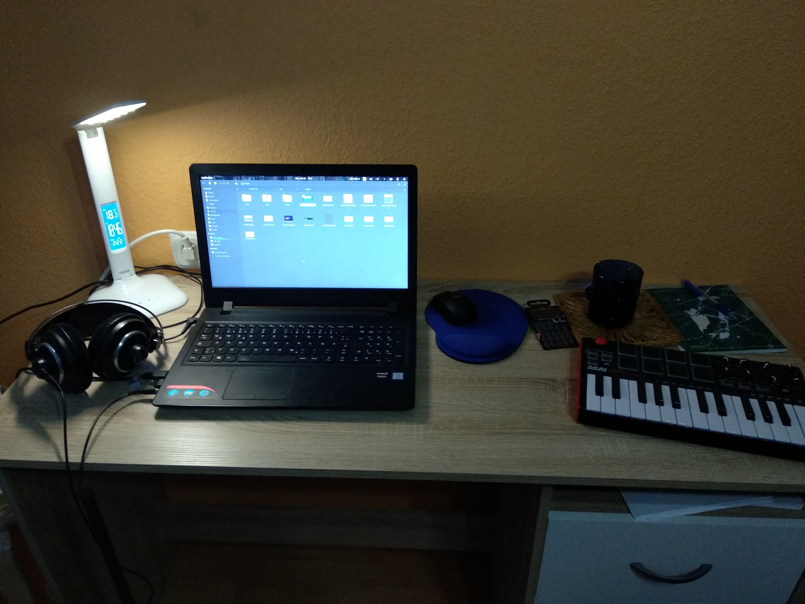

Stefan Vladimirov
Chief Creative at Swipes. Loves order and beauty. Always striving to achieve the balance between function
and aesthetics.

Front-End & UX Developer
Short intro
Hi, I'm Kristjan. I get a kick out of animations/interactions and building cool UI. I have a thing for lots of things.
What do you do for a living?
I build cool shit (at least I think so). I'm a front-end/UX developer. I mostly build UI, work on (micro)interactions, animations and sometimes some people ask me to do some UX work.
When did you find your passion to develop?
Probably in high school. I think it was in the 10th grade when a classmate needed a website, and as we all are as teenagers, I was hella' confident and said I could do it. I mean, I actually couldn't, but how hard could it be, right? 10 days of Googling later I actually managed to put a website together, it was shit, but it existed. From that point on I fell in love with building UI's.
For how long have you been a developer?
Professionally? I guess around five years, but I really started to feel like I'm going somewhere with this after I joined Swipes. So my answer will be 2.5 years.
For how long have you been illustrating?
Professionally I’ve been a product illustrator for about an year.
Describe the beginning of your day
Oh god, people, don't judge me. Now that I work from home I get out of bed at around 11 even though I wake up at 7. I spend three hours in bed reading (not books, more like reddit), watching youtube and being the lazy piece of shit that I am. My day starts with me giving time for myself, I don't really work well within strict schedule, I do better work when I feel motivated (which sometimes is late at night), but otherwise I don't force myself to work.
What’s your workspace?
Currently my bed mostly, it's really cold in Estonia and I love my blanket.
*Alex made me clean my desk and show it to you*
What’s your source for inspiration?
Other people's work. So often I see something so incredibly pretty that I have to put everything on hold to bounce ideas of that and create something of my own.
What works are you most proud of?
Huh, that's a hard one. I don't think I'm proud of something specific. It's more like I'm proud of myself every time I finish something, when I see the result of my work. Sometimes it feels so surreal to be able to build products, or even just like a button, from scratch.. myself.. it's crazy.

What are the tools you use in your day to day life?
My go to code editor at the moment is Sublime Text 3 and I guess I use terminal on a daily basis. For on the fly image editing I use GIMP (don't ask why, I've used it for like 7 years now and I just know how it works + it's fast). For viewing designs it's either Invision or Zeplin.
Do you follow any set of principles for your work?
I'm not sure if they are principles per se, but I have some things.
What’s your favourite movie?
Is it too lame if I say Deadpool? I mean, my other answer would be No Strings Attached. Not sure which one makes me look less cool.
What's your favourite book?
I will probably never get over Harry Potter, it has shaped so much of who I am. I've read all of the books at least 7 times, some more. I would follow this up with Eragon. As you can probably tell I like young-adult fantasy books. I don't think I've ever read any non-fiction, sue me.
What advice would you give to people that start out with Front End Development?
Honestly? Just do it. Start doing things, be excited, ask questions.
Have you ever thought on empowering your creative community in any way, shape or form?
Yes, but outside of codepen community I haven't really done much. I mean, I did a codepen event in Sofia, three people showed up, thanks guys.
Thank you for your time and honesty Kris,I love the slight comedic vibe of your interview.
Recommended reads